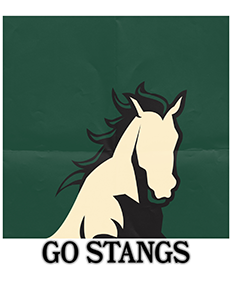
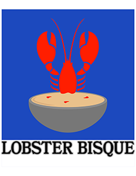

Bosdidit Posters


Elise made these posters for her friend's home. They attend Cal State San Luis Obispo, whose mascot is the mustangs, and they also just love the taste of lobster bisque. She was told to make something that reminded her of them, so she did. Simple, sleek, ideal. Components: Illustrator